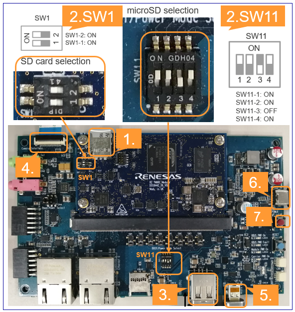

The RZ/V2L EVK is the ideal board kit for RZ/V2L evaluation.
Since MIPI camera module is included, you can start evaluating RZ/V2L immediately by building an environment.
Following items are included in the RZ/V2L EVK.
Equipment
Details
RZ/V2L Evaluation Board
Evaluation board itself.
MIPI Camera Module
Google Coral Camera.
Note that the CMOS sensor (OV5645) in the camera is no longer available, and should not be used for mass production. Any software support provided is for evaluation purposes only.
MicroUSB to Serial Cable
For serial communication between PC and the board.
Step 7: Deploy AI Application
This section explains how to deploy the AI Application to the RZ/V2L EVK.
To boot the board, bootloader and other Linux necessary files are required.
There are two types of bootloader available on RZ/V2L AI SDK.
eSD Bootloader: The board boots up using the bootloader written on microSD card.
QSPI Bootloader: The board boots up using the bootloader written in Flash ROM on the board.
Other necessary files, i.e. Linux kernel and root filesystem, are stored on microSD card.
You can use Linux PC to format the microSD card and expand the kernel and the root filesystem using SD card reader.
Note
Regarding the eSD (Embedded SD) booting, please note the following:
The eSD boot procedure using microSD card described in this guide is for evaluation purposes only.
If you use the eSD boot, please implement the eSD on your board according to the standard "SD Specification Part 1 eSD Addendum (version 2.10)".
Preparation
Click the button
This step contains both eSD and QSPI Bootloader explanation.
Please click the button below to update the explanation according to your bootloader interface.
eSD BootloaderQSPI Bootloader
For eSD
eSD explanation will be shown in this style if you click "eSD Bootloader" button above.
For QSPI
QSPI explanation will be shown in this style if you click "QSPI Bootloader" button above.
1. Setup RZ/V2L EVK
For eSD
microSD card needs to contain bootloaders, the Linux kernel and root filesystem to boot-up the board.
You can use Linux PC to format the microSD card and expand the kernel and the root filesystem using SD card reader.
Note
This step is required only when starting the AI SDK or when using the new version of AI SDK.
If you have already setup the microSD card with the latest bootloader, Linux kernel, Linux device tree file and root filesystem, skip this step and proceed to the next procedure (2. Deploy Application to the Board).
For QSPI
microSD card needs to contain the Linux kernel and root filesystem to boot-up the board.
You can use Linux PC to format the microSD card and expand the kernel and the root filesystem using SD card reader.
Bootloaders must be written in Flash ROM on the board.
You can use Windows PC to write the bootloaders on Flash ROM.
Note
This step is required only when starting the AI SDK or when using the new version of AI SDK.
If you have already setup the microSD card and the bootloader written in Flash ROM on the board, skip this step and proceed to the next procedure (2. Deploy Application to the Board).
Warning
Change /dev/sdb to your microSD card device name.
Run the following commands to setup the partition 2, which is the root filesystem of the board.
sudo mount /dev/sdb2 /mnt/sd
sudo tar xfj $WORK/board_setup/eSD/core-image-weston-smarc-rzv2l.tar.bz2 -C /mnt/sd
sudo cp$WORK/ai_sdk_setup/data/libtvm_runtime.so /mnt/sd/usr/lib64
sync
sudo umount /mnt/sd
Warning
Change /dev/sdb to your microSD card device name.
For QSPI
Following three files are necessary, which must be placed on each partitions on microSD card.
They are in the ${WORK}/board_setup/QSPI directory.
File
Description
microSD card partition
Image-smarc-rzv2l.bin
Linux kernel image (The boot program)
Partition 1
Image-r9a07g054l2-smarc.dtb
Linux device tree file (The configuration file for booting)
Partition 1
core-image-weston-smarc-rzv2l.tar.bz2
Linux Root filesystem
Partition 2
Run the below command to decompress ${WORK}/board_setup/QSPI.zip.
cd${WORK}/board_setup
unzip QSPI.zip
Insert the microSD card to Linux PC.
Check if the two partitions are created successfully by running df command.
df-h
Filesystem Size Used Avail Use % Mounted on
… … … … … …
/dev/sdb1 … … … … …
/dev/sdb2 … … … … …
Warning
Device name of microSD card, /dev/sdb, may differ depending on your environment.
Run the following commands to setup the partition 1.
Warning
Change /dev/sdb, to your microSD card device name.
Run the following commands to setup the partition 2, which is the root filesystem of the board.
sudo mount /dev/sdb2 /mnt/sd
sudo tar xfj $WORK/board_setup/QSPI/core-image-weston-smarc-rzv2l.tar.bz2 -C /mnt/sd
sudo cp$WORK/ai_sdk_setup/data/libtvm_runtime.so /mnt/sd/usr/lib64
sync
sudo umount /mnt/sd
Warning
Change /dev/sdb, to your microSD card device name.
Note
If you would like to eject the microSD card, please run following command and remove the microSD card from Linux PC.
sudo eject /dev/sdb
Warning
Change /dev/sdb to your microSD card device name.
Write the bootloaders to SD card
Write the bootloaders to Flash ROM
For eSD
Before booting up the board, you must write the latest bootloaders to microSD card.
This procedures needs to be done only once as long as you use the same version of AI SDK.
There are three files in ${WORK}/board_setup/eSD/bootloader to boot up the board.
bl2_bp_esd-smarc-rzv2l_pmic.bin
bl2-smarc-rzv2l_pmic.bin
fip-smarc-rzv2l_pmic.bin
Run the following commands to write these files to the microSD card to boot for eSD.
Run the following command to mount the partition 2, which contains the root filesystem.
sudo mount /dev/sdb2 /mnt/sd
Warning
Change /dev/sdb to your microSD card device name.
Create the application directory on root filesystem.
sudo mkdir /mnt/sd/home/root/tvm
Note
Directory name tvm can be determined by user.
Copy the necessary files in execution environment.
Select the appropriate option below based on the application type explained in Getting Started Step 6.
Option 1: <Application 1>
Check the README.md document provided in application directory and follow the instruction in the chapter called "Application: Deploy Stage" (or similar) to deploy the application.
Example:
In R01_object_detection application, follow the instruction in here to find files to be copied.
Use the following command to copy the files to root filesystem.
sudo cp$WORK/ai_sdk_setup/data/<Path to target file>/<filename> /mnt/sd/home/root/tvm
Option 2: <Application 2>
Run the following command to copy the whole repository to the root filesystem.
sudo cp$WORK/ai_sdk_setup/data/<Path to repository>/RZV2L_AiLibrary /mnt/sd/home/root/tvm -r
Run the following command to sync the data with memory.
sync
Run the following command to unmount the partition 2.
sudo umount /mnt/sd
Eject the microSD card by running the following command and remove the microSD card from Linux PC.
sudo eject /dev/sdb
Warning
Change /dev/sdb to your microSD card device name.
3. Boot RZ/V2L EVK
This section explains how to boot the RZ/V2L EVK.
eSD BootloaderQSPI Bootloader
Follow the instruction below to boot the board.
For eSD
Insert the microSD card to the Board.
Note
Use the microSD card slot CN3 as shown in the figure.
Change SW1 and SW11 setting as shown in the figure.
Connect the USB mouse and USB keyboard via USB hub.
Connect the Google Coral camera to the Board.
Connect the HDMI monitor to the Board.
Connect the power cable to the Board.
Press power button for 1 second to turn on the board.

After the boot-up, following screen will be displayed on HDMI monitor.
Click the icon at the top-left corner to open the terminal.
For QSPI
Note
After bootloader is written and U-boot setting is changed, terminal emulator is no longer needed.
Users can detach the serial port connection.
Insert the microSD card to the Board.
Note
Use the microSD card slot CN10 as shown in the figure.
Change SW1 and SW11 setting as shown in the figure.
Connect the USB mouse and USB keyboard via USB hub.
Connect the Google Coral camera to the Board.
Connect the HDMI monitor to the Board.
Connect the power cable to the Board.
Press power button for 1 second to turn on the board.
After the boot-up, following screen will be displayed on HDMI monitor.
Click the icon at the top-left corner to open the terminal.
Follow the instructions explained in the document (README.md) of applications on GitHub.
Example:
For R01_object_detection application, follow the instruction here to run the application.
If you have successfully run the application, you will see following window on HDMI screen.